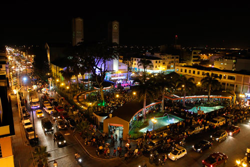
Babahoyo
Capital · Cabecera: BabahoyoCapital provincial a orillas del río Babahoyo. Famosa por su malecón, sus regatas y la casa-hacienda de Olmedo.
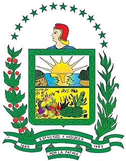
Los RíosEcuador · Región Costa
Tierra montubia, de ríos caudalosos, cacao fino de aroma y campos verdes que alimentan al país.
Descubre másAño de creación
(6 de octubre)
Cantones
Superficie
Habitantes
(Censo 2022)
Capital provincial
De los pueblos ancestrales a la provincia agrícola más productiva del Ecuador
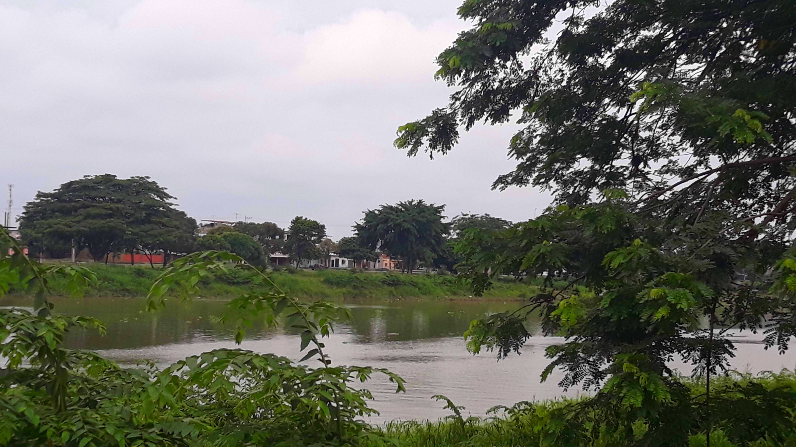
La provincia de Los Ríos está ubicada en el centro de la región Litoral del Ecuador. Recibe su nombre por la gran cantidad de ríos que la atraviesan: Babahoyo, Vinces, Quevedo, Catarama, Puebloviejo y Zapotal, entre otros, que forman parte de la cuenca del río Guayas.
Gracias a esa red fluvial y a sus suelos fértiles, Los Ríos se convirtió en el corazón agrícola del país: aquí se cultiva cacao, banano, arroz, maíz, palma africana y soya.
Entre los años 500 y 1500 d.C. florecieron en la zona pueblos de la cultura Milagro-Quevedo, hábiles orfebres y agricultores. Grupos como los Babahoyos, Pimochas, Palenques y Chonanas habitaban las riberas de los ríos.
Durante la Colonia, Babahoyo fue un puerto fluvial clave: allí se almacenaban las mercancías que viajaban entre Guayaquil y la Sierra (Quito). Por eso se le conocía como “Las Bodegas”.
En su hacienda La Virginia, a orillas del río Babahoyo, el prócer y poeta José Joaquín de Olmedo escribió el célebre poema “La Victoria de Junín. Canto a Bolívar”.
Durante el gobierno de Gabriel García Moreno se crea oficialmente la provincia de Los Ríos, separándola de la jurisdicción de Guayas, con Babahoyo como capital.
La “pepa de oro” (cacao) convirtió a Los Ríos en una de las zonas más ricas del país. Las familias cacaoteras de Vinces viajaban a Europa y trajeron su arquitectura y costumbres, por lo que a la ciudad se le llamó “París chiquito”.
Tras la crisis del cacao llegó el auge bananero y arrocero. Hoy Los Ríos es orgullosamente montubia: su identidad se expresa en los rodeos, amorfinos, música y gastronomía.
La provincia está dividida en 13 cantones

Capital provincial a orillas del río Babahoyo. Famosa por su malecón, sus regatas y la casa-hacienda de Olmedo.
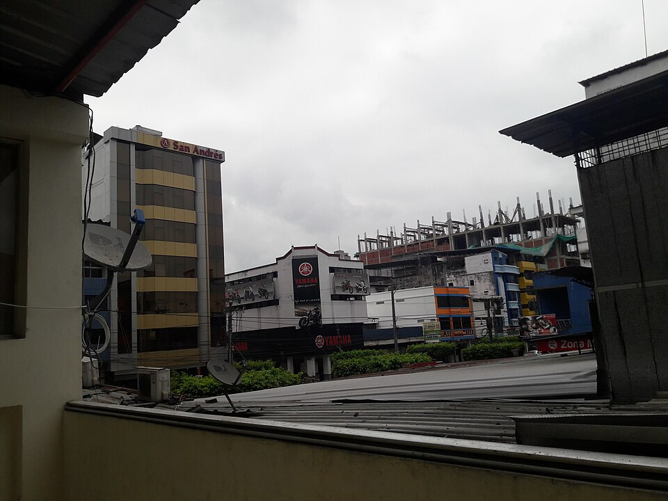
La ciudad más poblada y el gran centro comercial de la provincia. Conocida por su comunidad china y sus famosos chifas.
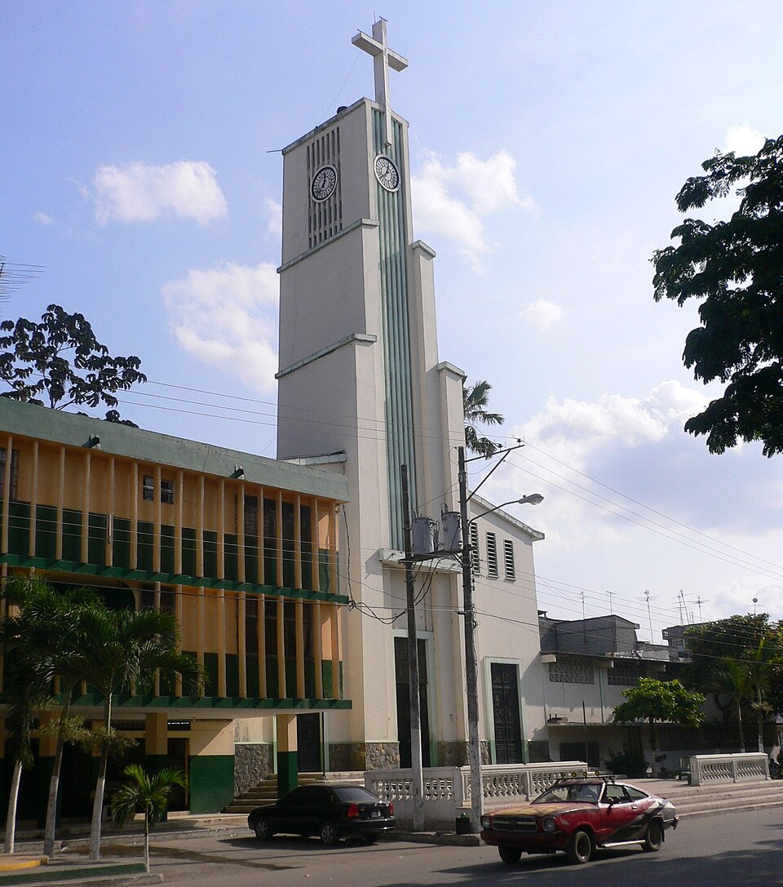
El “París chiquito”: réplica de la Torre Eiffel, casonas de la época cacaotera y un hermoso malecón.
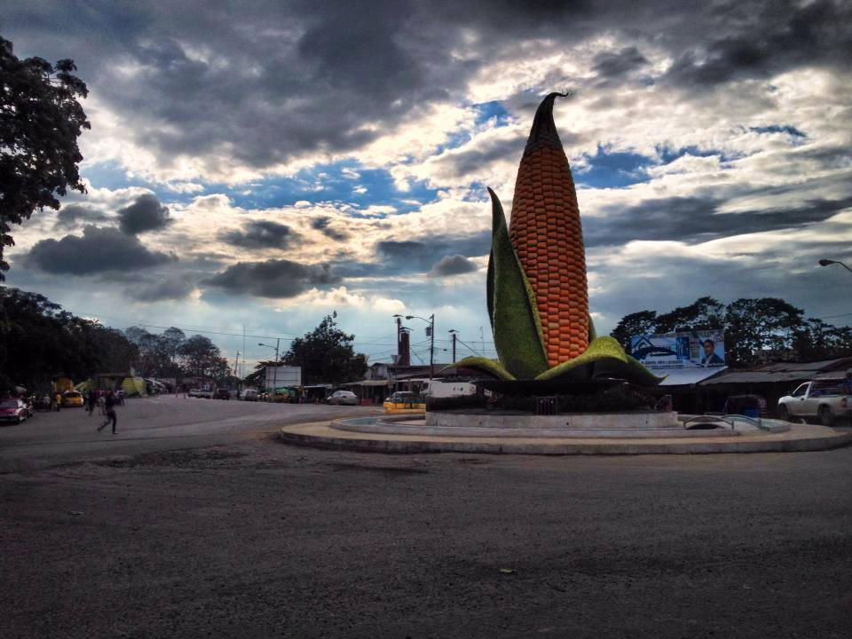
Reconocida como la “capital maicera del Ecuador” por su gran producción de maíz.
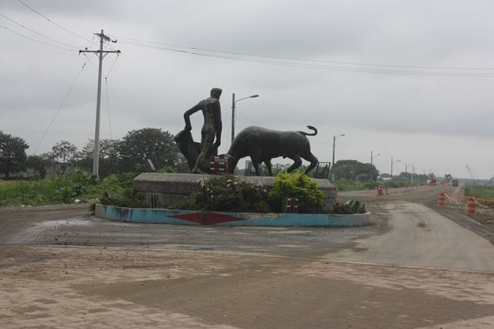
Uno de los cantones más antiguos. Parte del humedal Abras de Mantequilla se encuentra en su territorio.
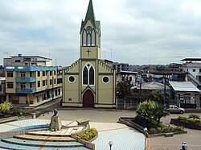
Cantón agrícola al pie de las estribaciones andinas, con ríos y balnearios de agua dulce.
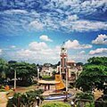
Tierra arrocera y bananera, atravesada por el río que lleva su nombre.
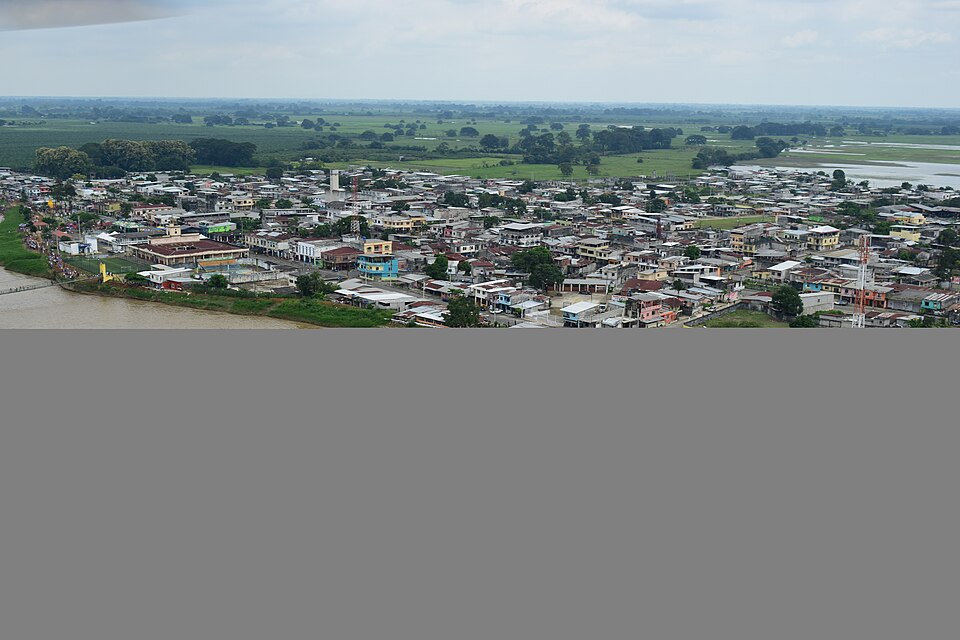
Su cabecera, Catarama, se levanta junto al río del mismo nombre. Zona de cacao, arroz y banano.
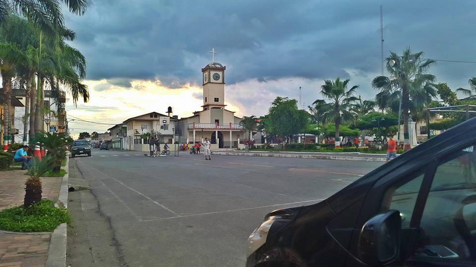
Debe su nombre al pueblo ancestral de los Palenques. Cerca se encuentra el Bosque Protector Jauneche.
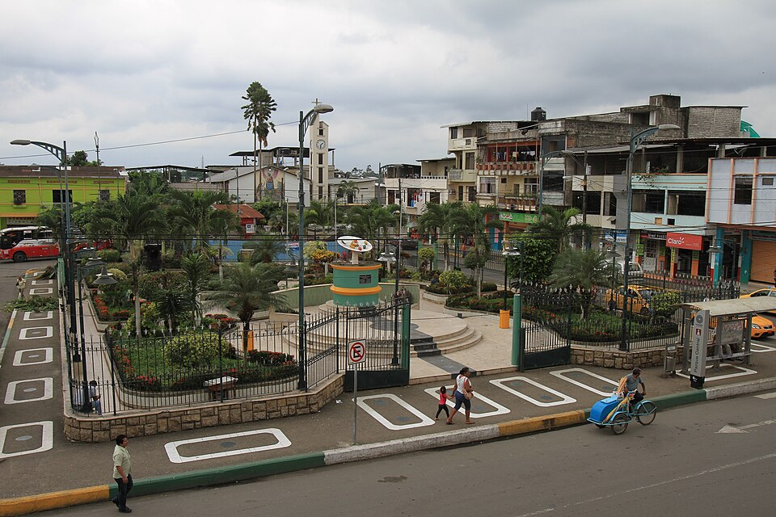
Cantón joven y dinámico al norte de la provincia, productor de banano, cacao y palma.
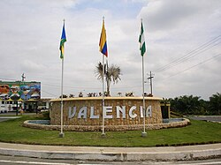
Zona de clima más fresco, cercana a Cotopaxi; destaca por sus ríos, cascadas y producción agrícola.
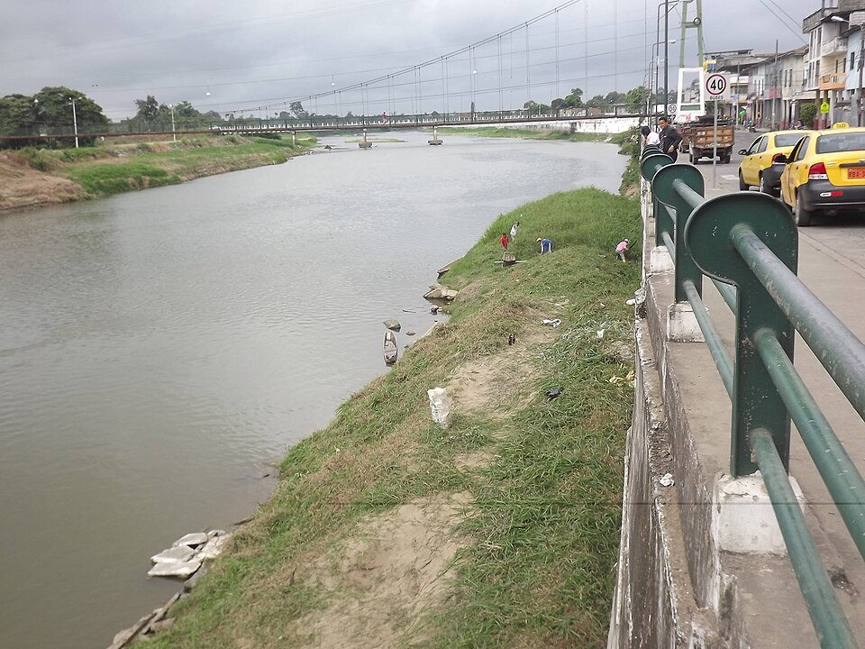
Cantón ribereño del río Quevedo, de tradición montubia, con playas de río y producción cacaotera.
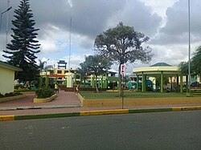
El cantón más joven de la provincia, en el límite con Bolívar y Cotopaxi, rodeado de naturaleza.
Naturaleza, ríos, historia y tradición montubia
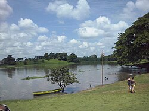
Sitio Ramsar de importancia internacional, hogar de cientos de especies de aves. Entre Vinces, Baba y Puebloviejo.
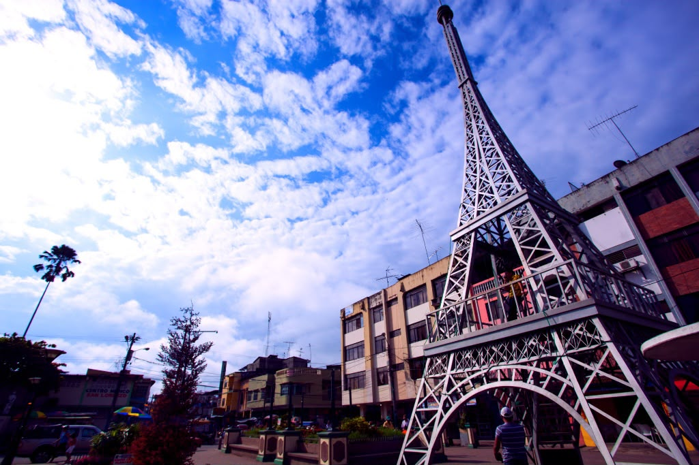
Símbolo del “París chiquito”, junto al malecón del río Vinces.
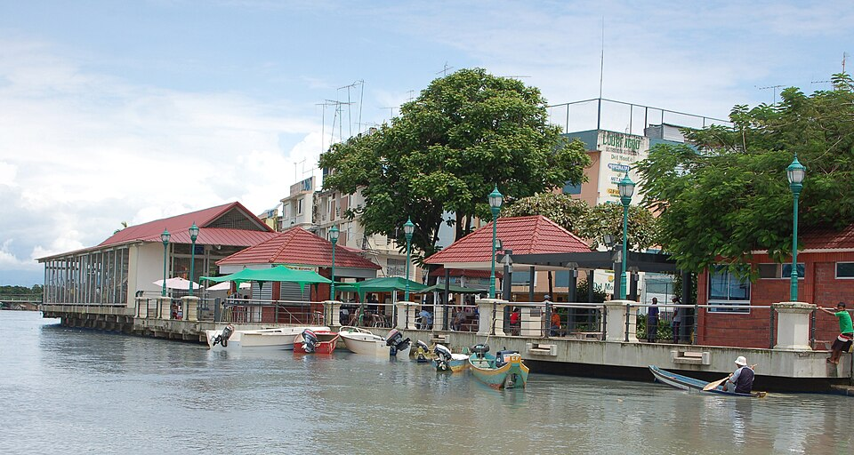
Paseo a orillas del río, ideal para ver los atardeceres y las regatas.
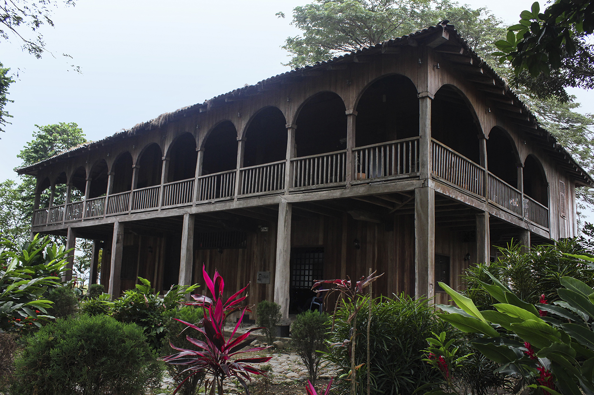
Casa donde Olmedo escribió el “Canto a Bolívar”, en Babahoyo.
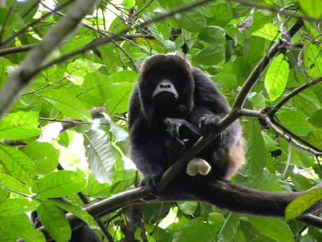
Uno de los últimos remanentes de bosque tropical seco-húmedo de la provincia.
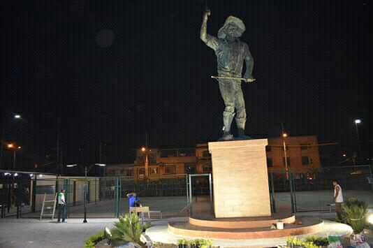
Tradición que se celebra cada 12 de octubre: destreza a caballo, amorfinos y música.
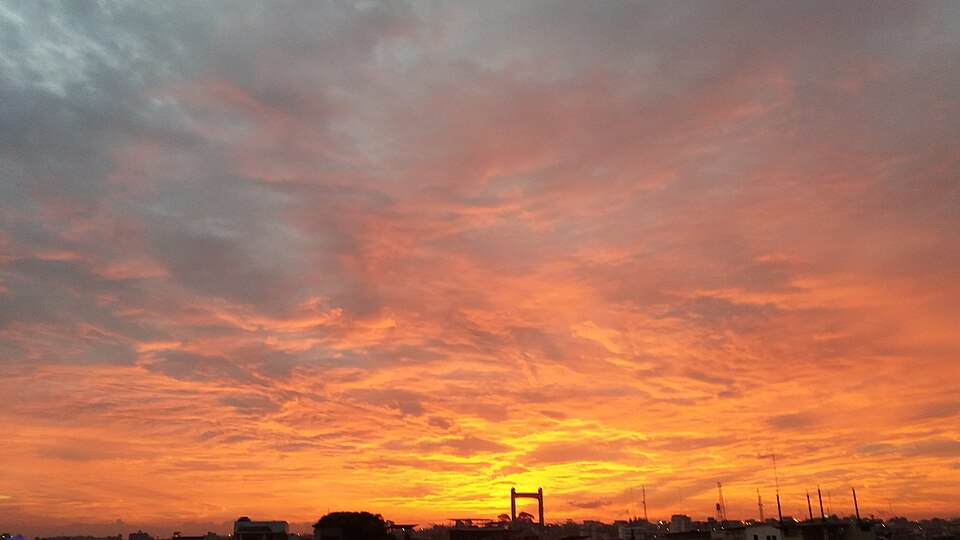
Paseos, balnearios de agua dulce y la vida comercial de la ciudad.
Sabores de la cocina montubia
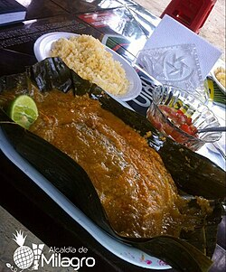
Plátano verde, maní y pescado de río envueltos en hoja de plátano.
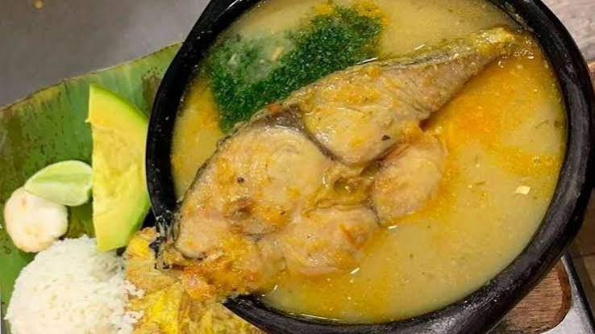
Sopa tradicional con bagre de río, yuca, verde y culantro.
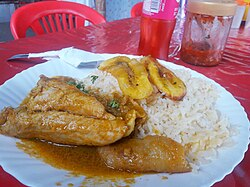
Gallina de campo guisada, acompañada de arroz y maduro.
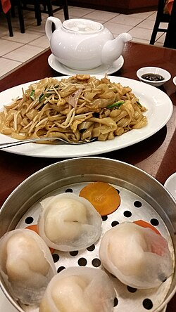
Herencia de la comunidad china asentada en Quevedo.
Período 2023 – 2027 (posesionados el 14 de mayo de 2023)
Prefecto de Los Ríos
Viceprefecta de Los Ríos
Gobernador (encargado, desde agosto 2026)
| Cantón | Alcalde / Alcaldesa |
|---|---|
| Babahoyo | Gustavo Barquet Marún |
| Baba | Shirley Melo Olvera |
| Buena Fe | Diana Anchundia Yépez |
| Mocache | Yenny Domínguez |
| Montalvo | Eduardo Troncoso Rosas |
| Palenque | Jordy Carriel Navarrete |
| Puebloviejo | Elsy Ospina Garcés |
| Quevedo | Alexis Matute Matute |
| Quinsaloma | Cristhian Aldaz González |
| Urdaneta | Amada Zambrano Rodríguez |
| Valencia | Daniel Macías López |
| Ventanas | Carlos Carriel Abad |
| Vinces | Alfonso Montalván Cerezo |
* Datos según resultados del CNE de las elecciones seccionales de 2023. Verificar cambios recientes en las páginas oficiales de cada GAD.